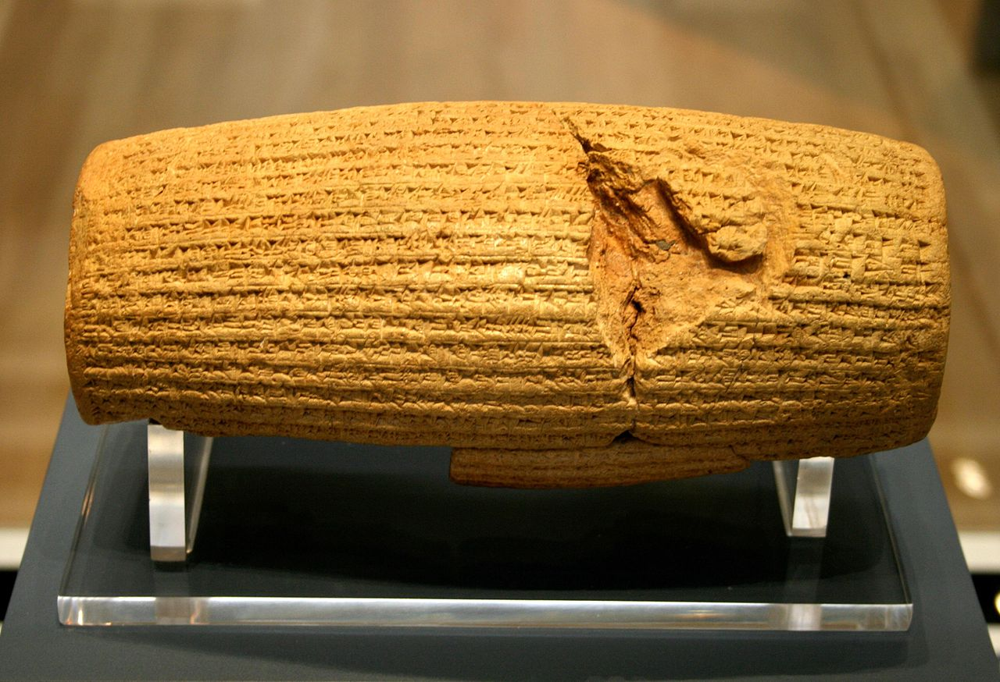

02. História dos direitos humanos
Há 500 anos a.C., só possuíam direitos os indivíduos que pertenciam a um determinado grupo. Um dos documentos mais antigos que vinculou os direitos humanos é o Cilindro de Ciro, uma peça de argila que contém uma declaração do rei persa após a conquista da Babilônia em 539 a.C. O objeto foi considerado a primeira declaração dos direitos humanos na história e foi descoberto em 1879. A inscrição no Cilindro de Ciro consiste em quarenta e cinco linhas de um texto escrito em grafia acadiana cuneiforme. Em 1971, a sua tradução foi feita pela ONU em todos os seus idiomas oficiais. O texto apresenta características inovadoras, especialmente em relação à religião. Nele era declarada a liberdade de religião e abolição da escravatura. Tem sido valorizado positivamente por seu sentido humanista e talvez por isso tenha sido declarado como a primeira declaração de direitos humanos.
A partir daí, a concepção de direitos humanos se transformou e a luta por justiça no mundo se ampliou. Na contemporaneidade, percebe-se a incorporação de novas reivindicações, entretanto, tem sido mantida a expectativa de que é possível a construção de uma sociedade cujos membros tenham garantidas "condições igualitárias de convivência social e de distribuição dos bens acumulados pelo ser humano a todos os indivíduos, considerando que todos são detentores de direitos essenciais, indispensáveis à convivência social" (SANTOS, 1991). Vem daí a importância dos direitos humanos, pois eles são fundamentais e inalienáveis por comportarem os pressupostos necessários para a garantia do direito a uma vida digna.
O mundo tem passado por grandes transformações e a concepção moderna dos direitos humanos tem suas raízes nas transformações socioculturais e filosóficas advindas do Iluminismo Europeu, movimento intelectual e cultural que ganha força e projeção, principalmente, a partir dos séculos XVII e XVIII. É no evento do Iluminismo que os fundamentos da dominação sofrem um abalo com o império da razão sobre a fé, a centralidade do ser humano nas explicações filosóficas. É, neste contexto histórico que são pensados os fundamentos conceituais dos direitos humanos. Santos (1991) argumenta que tal processo não deixa de ter conexões com o campo social. A principal delas consiste em ressaltar a ideia de igualdade, política e civil, entre os seres humanos.
A Revolução Francesa de 1789 constitui um acontecimento histórico profundamente simbólico das lutas sociais em prol de uma sociedade menos desigual. Liberdade, igualdade e fraternidade, seus lemas célebres, influenciaram e foram influenciados, em certa medida, pelos fundamentos da noção original dos direitos humanos. Uma das principais contribuições da Revolução foi a Declaração de Direitos do Homem e do Cidadão, votada pela Assembléia Nacional Constituinte francesa, em 26 de Agosto de 1789. Ela é um marco relevante na construção de uma noção de igualdade, principalmente civil e política (SANTOS, 1991).
A Declaração Universal dos Direitos Humanos de 1948 é considerada o documento mais importante no que diz respeito a essa garantia dos direitos humanos. Ela foi elaborada após os horrores das duas guerras mundiais, dos regimes totalitários, das tentativas de extermínio dos judeus e demais povos considerados inferiores, enfim, após graves desrespeitos aos direitos humanos. "Mas será que é a partir de suas violações, isto é, justamente por sua ausência, é que os direitos humanos podem ser definidos? Somente ao serem negados é que eles são exigidos?" (SANTOS, 1991).
Página 70É possível pensar que os direitos humanos passaram a ser respeitados após a Declaração Universal de 1948?
Infelizmente não. Ela "desencadeou um processo de mudança no comportamento social e a produção de instrumentos e mecanismos inter- nacionais de direitos humanos que foram incorporados ao ordenamento jurídico dos países signatários" (PNDH, 2008, p. 21). Esse processo resultou na base dos atuais sistemas global e regionais de proteção dos direitos humanos. No entanto, no que se refere às violações de direitos humanos, tanto no campo dos direitos civis e políticos, quanto na esfera dos direitos econômicos, sociais, culturais e ambientais, pode-se dizer que muito há para ser feito. Outro aspecto a ser destacado é "o agravamento na degradação da biosfera, a generalização dos conflitos, o crescimento da intolerância étnico-racial, religiosa, cultural, geracional, territorial, físico-individual, de gênero, de orientação sexual, de nacionalidade, de opção política, dentre outras, mesmo em sociedades consideradas historicamente mais tolerantes, como revelam as barreiras e discriminações a imigrantes, refugiados e asilados em todo o mundo" (PNDH, 2008, p. 21). A Declaração oferece um parâmetro mínimo de julgamento, um indicador de monitoramento das violações e de controle social dos atos estatais, entretanto, ainda é preciso percorrer um longo caminho para avançarmos nos sentido da efetivação dos direitos.
Algumas questões podem ter permeado os debates relativos à problemática da igualdade e dos direitos humanos, tais como o processo de globalização neoliberal excludente e as diferença e do multiculturalismo, em tempos de uma mundialização com pretensões monoculturais. Vera Maria Candau (2008) argumenta que a relação entre questões relativas à justiça, redistribuição, superação das desigualdades e democratização de oportunidades e as referidas ao reconhecimento de diferentes grupos culturais se faz cada vez mais estreita. Ela ressalta que "a problemática dos direitos humanos, muitas vezes entendidos como direitos exclusivamente individuais e fundamentalmente civis e políticos, amplia-se e, cada vez mais, afirma- se a importância dos direitos coletivos, culturais e ambientais" (CANDAU, 2008, p. 46).
Os debates acerca destas questões continuam em pauta e alguns resultados têm sido positivos, pois vários acordos e tratados internacionais têm orientado a promoção e garantia dos direitos humanos nos países em todo o mundo. Entretanto, para que esse objetivo seja alcançado, será necessário que haja o envolvimento e mobilização da sociedade e de suas organizações, para consolidar a democracia nos contextos nacionais.
Dentre os avanços mais importantes para a efetivação dos direitos humanos no mundo e no Brasil, podem ser citados:
| 1215 | A Magna Carta — que deu novos direitos às pessoas e tornou o rei sujeito à lei; |
| 1628 | A Petição de Direito — que definiu os direitos do povo; |
| 1789 | Declaração de Direitos do Homem e do Cidadão; |
| 1948 | Declaração Universal dos Direitos Humanos; |
| 1948 | Convenção contra o Genocídio; |
| 1949 | Convenção para a Repressão do Tráfico de Pessoas e da Exploração da Prostituição por Outros; |
| 1950 | Convenção Europeia de Defesa dos Direitos do Homem e das Liberdades Fundamentais; |
| 1951 | Convenção relativa ao Estatuto dos Refugiados; |
| 1956 | Convenção Complementar sobre Abolição da Escravidão; |
| 1965 | Convenção sobre a Eliminação de todas as formas de Discriminação Racial; |
| 1966 | Pacto Internacional Relativo aos Direitos Econômicos, Sociais e Culturais; |
| 1976 | Pacto Internacional Relativo aos Direitos Civis e Políticos; |
| 1979 | Convenção sobre a Eliminação de todas as formas de Discriminação contra a Mulher; |
| 1984 | Convenção contra a Tortura e outros tratamentos ou penas cruéis, desumanas ou degradantes; |
| 1988 | Constituição Federal do Brasil; |
| 1989 | Convenção sobre os Direitos da Criança; |
| 1990 | Estatuto da Criança e do Adolescente; |
| 1994 | Convenção Interamericana para Prevenir, Punir e Erradicar a Violência Contra a Mulher; |
| 1998 | Programa Nacional de Direitos Humanos I; |
| 2001 | Declaração de Durban - Combate ao Racismo, Discriminação Racial, Discriminação Racial, Xenofobia e Intolerância Correlata; |
| 2002 | Programa Nacional de Direitos Humanos II; |
| 2003 | Plano Nacional de Educação em Direitos Humanos; |
| 2006 | Lei de Violência Doméstica e Familiar contra a Mulher – Maria da Penha. |
Alguns fatores têm influenciado novas demandas por direitos, entre os quais cabe destacar:
- o incremento da sensibilidade e da consciência sobre os assuntos globais por parte de cidadãos(ãs) comuns;
- a institucionalização de um padrão mínimo de comportamento nacional e internacional dos Estados, com mecanismos de monitoramento, pressão e sanção;
- a adoção do princípio de empoderamento em benefício de categorias historicamente vulneráveis (mulheres, negros(as), povos indígenas, idosos(as), pessoas com deficiência, grupos raciais e étnicos, gays, lésbicas, bissexuais, travestis e transexuais, entre outros);
- a reorganização da sociedade civil transnacional, a partir da qual redes de ativistas lançam ações coletivas de defesa dos direitos humanos (campanhas, informações, alianças, pressões etc.), visando acionar Estados, organizações internacionais, corporações econômicas globais e diferentes grupos responsáveis pelas violações de direitos.
Procurando atender tais demandas e promover a defesa, o respeito e a valorização desses direitos, é que se torna urgente e necessário educar em direitos humanos como forma de assegurar que cada indivíduo possa compreender a importância da convivência pacífica e do respeito mútuo; possa reconhecer a necessidade de fortalecimento de uma sociedade democrática. A democracia, entendida como regime alicerçado na soberania popular, na justiça social e no respeito integral aos direitos humanos, é fundamental para o reconhecimento, a ampliação e a concretização dos direitos. Para o exercício da cidadania democrática, a educação, como direito de todos e dever do Estado e da família, requer a formação dos(as) cidadãos(ãs) (PNDH, 2008, p. 24).